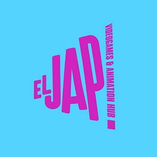

1.
Talleres del JAP
Ponemos en marcha una serie de cursillos previos al evento para la preparación de los participantes. Así, se convierte en un evento mucho más accesible para cualquiera que quiera participar sin experiencia previa en el desarrollo de videojuegos.
